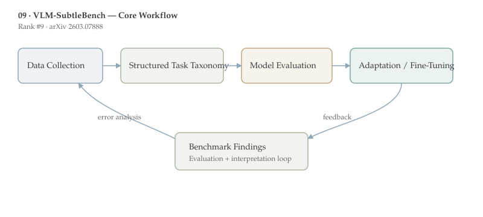

VLM-SubtleBench is ranked #9 by upvotes in the HuggingFace daily list. This document follows the standard-depth format for papers 6-10 and emphasizes method detail, benchmark interpretation, and deployment implications.
VLM-SubtleBench targets a blind spot in current multimodal evaluation: models may succeed when differences are large, yet fail when two images differ only in subtle, semantically important ways.
By covering ten difference types across industrial, aerial, medical, and natural-image contexts, the benchmark exposes systematic model-human gaps and provides a cleaner target for advancing fine-grained comparative reasoning.
Who should read this and why: This paper is particularly relevant for teams in quality inspection, medical support, remote sensing, and any workflow where “small visual change” implies major downstream decisions.
Comparative reasoning is central to human perception: we do not only recognize objects, we detect differences that matter under task constraints. In AI evaluation, however, many VLM benchmarks are dominated by obvious changes and broad semantics, so they under-measure this capability.
A key prerequisite concept is difference taxonomy. SubtleBench explicitly factors ten categories (Attribute, State, Emotion, Temporal, Spatial, Existence, Quantity, Quality, Viewpoint, Action), enabling per-type diagnosis rather than one aggregate score.
Another prerequisite is domain transfer. A subtle difference in medical imaging is very different from a subtle difference in street photography, yet both require robust visual grounding. By spanning multiple domains, the benchmark tests whether models learn general comparison primitives or memorize dataset-specific cues.
This perspective aligns with [[06-stepping-vlms-court|CourtSI]] and [[07-reading-not-thinking|Reading, Not Thinking]]: capability claims are only as strong as the stress tests used to measure them.
The main problem is that current VLM progress can look stronger than it is when benchmarks emphasize salient differences. In real settings, the critical signal is often tiny: a slight defect, a faint lesion boundary, or a small spatial displacement.
This gap matters now because VLMs are being considered for decision-support roles where subtle misses can be costly. Without targeted evaluation, teams may deploy models that are impressive on demos but brittle on edge cases.

The benchmark constructs paired image-question sets where answers hinge on nuanced visual distinctions. Unlike open-ended caption tasks, the setup forces grounded comparison between two similar alternatives.
The ten-category taxonomy encourages structured reporting. A model that performs well on quantity differences but poorly on temporal/state differences can be debugged with targeted training rather than generic scaling.
Evaluation includes both proprietary and open-source VLMs and compares them against human references, producing an explicit model-human gap estimate. This is critical because “best model among peers” is not the same as “good enough for deployment.”
A simple formal view is pairwise decision under small perturbations: $$\hat{y}=\arg\max_{y\in\mathcal{Y}}\;s_\theta(I_1,I_2,q,y)$$ where robust models require high score margins even when $I_1$ and $I_2$ differ minimally along task-relevant axes.
The principal finding is systematic underperformance versus humans across difference types and domains, confirming that subtle comparison remains an unsolved capability frontier for current VLMs.
Controlled analyses identify specific deterioration points rather than uniform weakness, supporting the claim that “subtle reasoning” is a composite skill with uneven sub-capabilities.
Because the benchmark spans industrial, aerial, and medical imagery, the results challenge assumptions that improvements on natural-image benchmarks alone will transfer to safety-critical domains.
The paper’s contribution is therefore less about a single SOTA number and more about measurement quality: it creates the evaluation lens needed to drive the next iteration of model development.
A useful next step is curriculum-based training from salient to subtle differences, with category-balanced sampling to prevent overfitting to easy difference types.
Another high-value extension is uncertainty-aware scoring. For subtle tasks, calibrated abstention may be preferable to forced guesses in safety-critical pipelines.